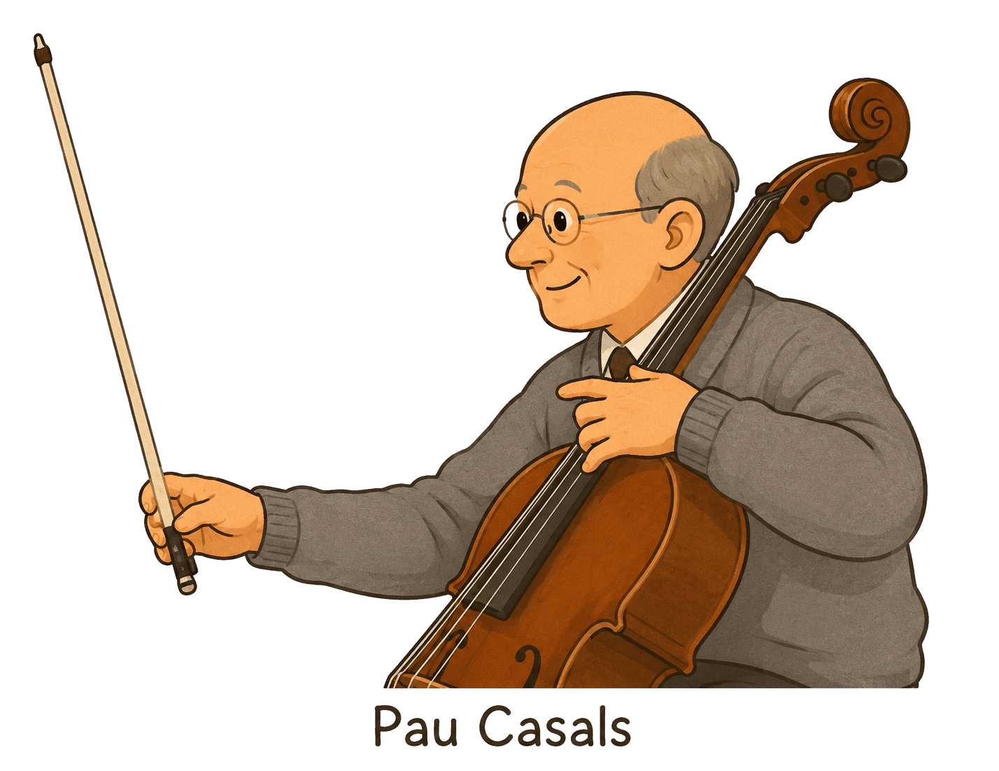
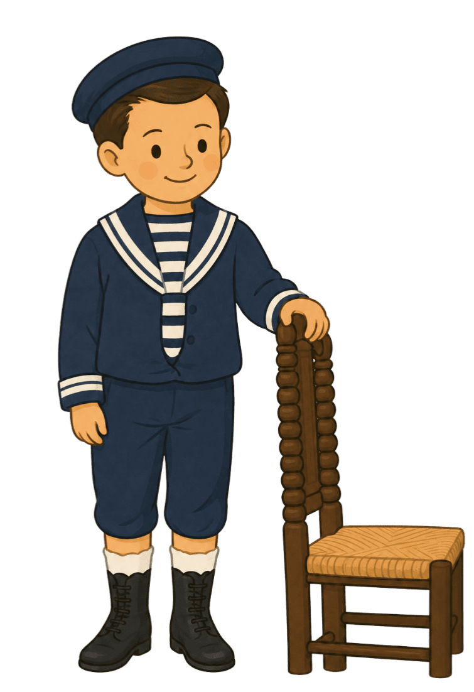
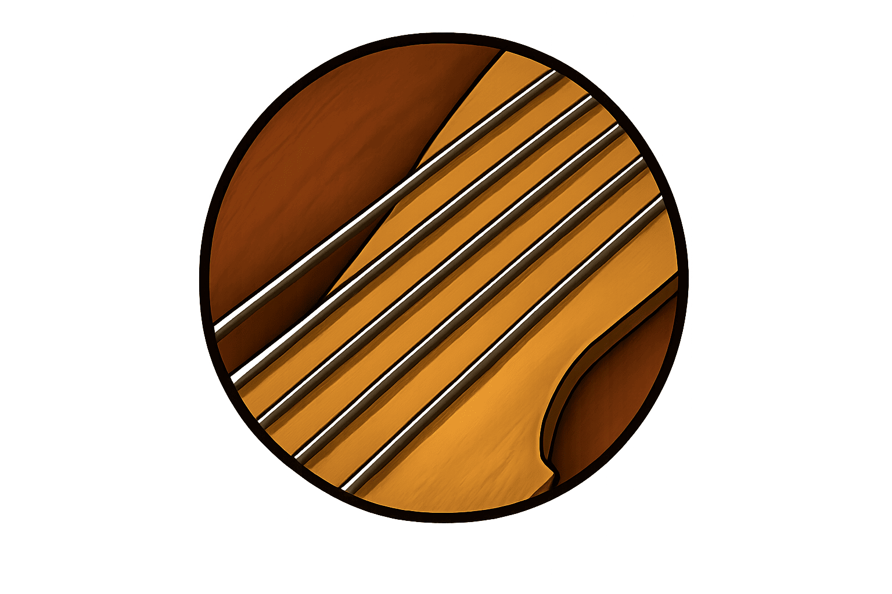
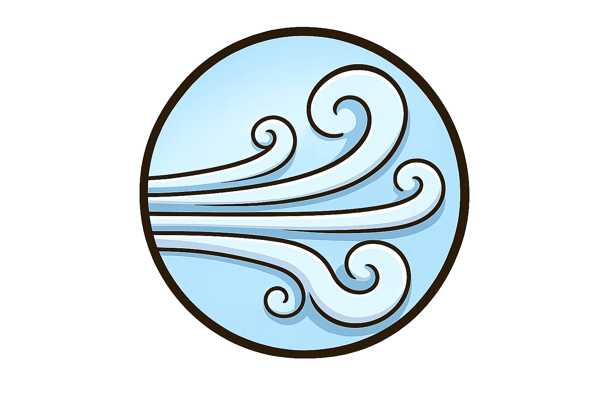
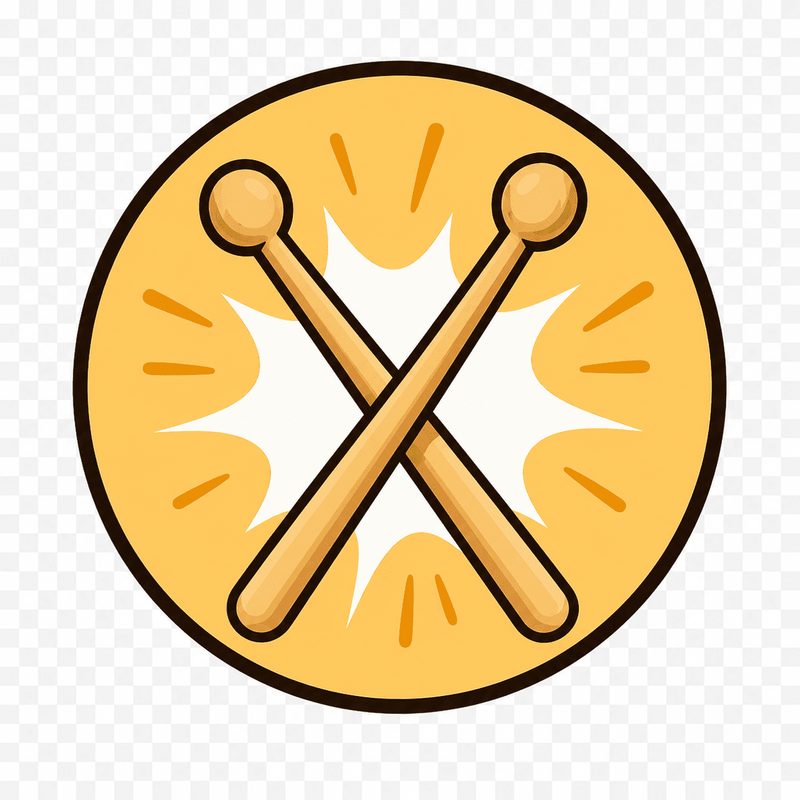

Una aventura interactiva sobre la vida d’un dels músics més importants del món.

Clica el botó per escoltar el primer so.
Selecciona només els tres objectes que va utilitzar el seu pare.
Clica les targetes en l’ordre correcte.
Quines van ser les partitures que va trobar en Pau Casals?
Clica només les ciutats on Pau Casals va estudiar música.
Mantén el cursor dins del camí sense sortir-te’n.
Arrossega cada instrument fins a la família correcta.

CORDAInstruments amb cordes i arc
VENTInstruments on cal bufar
PERCUSSIÓInstruments que es colpegenSelecciona només els objectes útils.
Clica les targetes en l’ordre correcte.
Ordena correctament els fragments d’El Cant dels Ocells.
Ordena les paraules correctament.
Gràcies per descobrir la vida de Pau Casals.
🎻 🕊️ 🌍